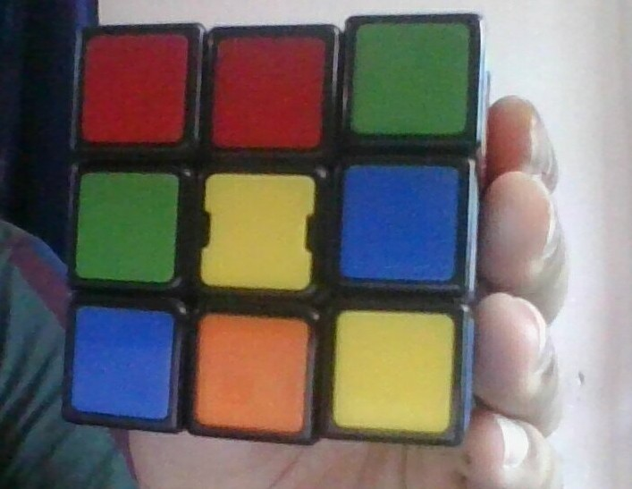

Check out the demonstration video here

Or follow the instructions
Instructions for inputting the cube
- At the input page an instruction is given, such as "yellow with orange on top". It means that, first you have to hold the cube in way that orange side of the cube appears on top and you are facing the yellow side.
-
After holding the cube in the right manner, you have to enter the first letter of the color of each of the nine squares that you see on
the side you are facing. Example: if the side you are facing looks like this:

Then you have to enter "rrggybboy". - Once you have entered the letters, make sure to press the check side button and see that the cube shown on the screen matches that with your own cube. Press the next side button and repeat this for all the six sides.
Instructions for solving the cube
- After inputting the cube you'll be provided with a set of moves which will be the solution of your cube.
- Apply the move in accordance with move map given on the solution page. If the moves are not clear to you, check out a better explaination for the moves here.
{% endblock %}